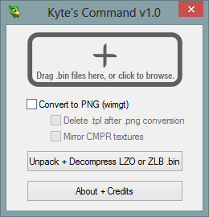
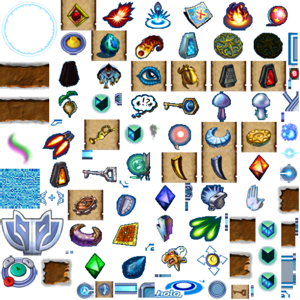
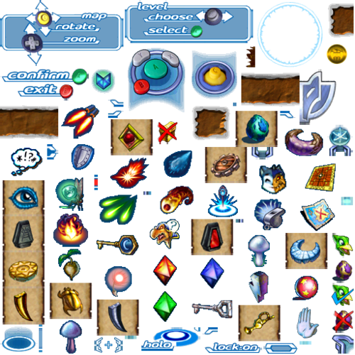
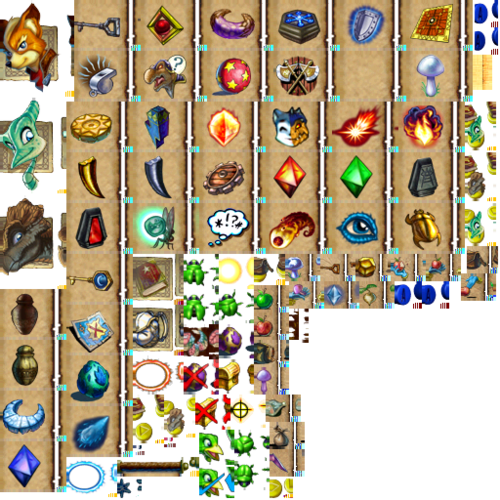
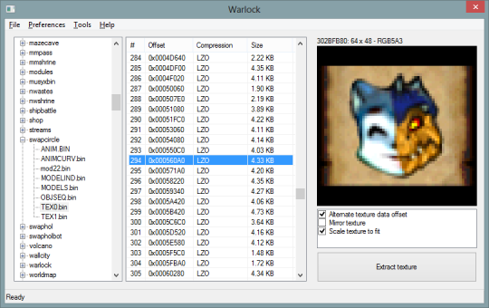
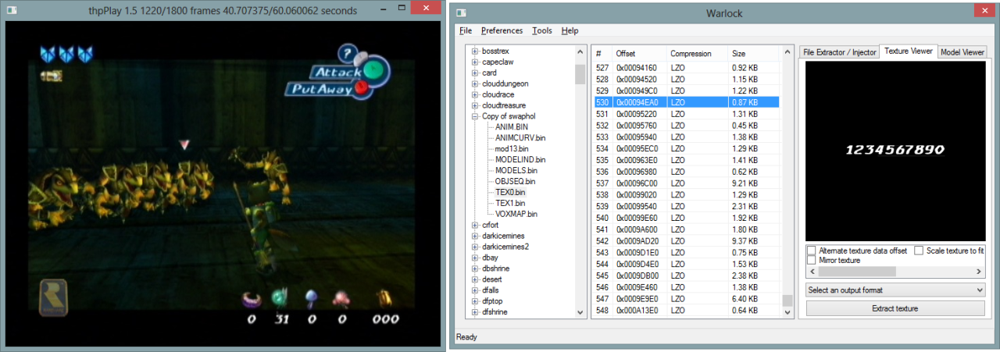
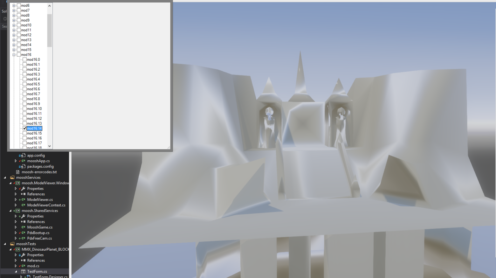
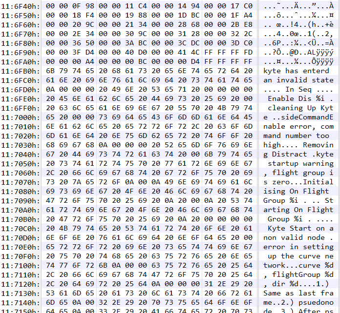
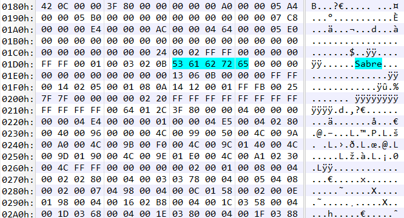
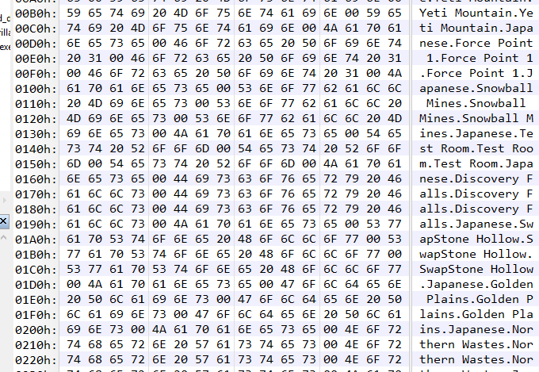

| Languages Used | C++, C#, GML |
Back in the late 90's Rare (then Rareware) was working on their final N64 title 'Dinosaur Planet'.
It was incredibly ambitious, and in my opinion a very unique title, especially in the N64 era.
The game was changed into Star Fox Adventures on the GameCube, and many things about it were altered for it to fit within the Star Fox universe.
A few years ago a 'kiosk' version of the game was leaked online, containing a demo of Star Fox Adventures, which contained a lot of data from the original N64 version.
It included all voice acting, many of the environmental 'level' models, and a whole bunch of pre-final GUI textures.
I dabbled in the data and reverse-engineered some formats, found some things and pieced together some things and manged to create a few tools and programs that could bring some of the data back to life!
MusyX was middleware for the GameCube by Factor5, used to create and playback music and sound effects in a Midi-sort-of-way. It was used in Star Fox Adventures, and the data consisted of a pack of a few proprietary files and the individual song files, also proprietary.
The kiosk disc contained quite a few unused sound files, so I took it upon myself to find the original GameCube SDK, the original MusyX SDK, and write an executable for GameCube that could play-back these files.
MusyX Player can switch between different sound 'packs' from both the kiosk and retail disc, and contains every single song file on both discs.
Quite a few never-before-heard songs were found this way, and it also allows you to endlessly enjoy the wonderful OST of Star Fox Adventures / Dinosaur Planet, as every song loops and plays the same way as in the game!
You can find a download for the ROM here (play it using https://dolphin-emu.org/):
https://mega.nz/#!KhNw2JCS!xlPJ6G2awN0FlOWGmXooF9Hbo8TnYgEIU3tecLBv9kg
This was a converter I wrote that modifies the proprietary texture header to a more common GameCube format and then converts it to PNG.

It revealed quite a lot of beta textures, mainly HUD related:


(The last image was using wrong starting addresses for the texture data, notable by the small corruption in each texture)
After both MusyX Player and Kyte's Command I wanted to make a tool that would include all functionality in one.
I wrote a GameCube Filesystem reader, and began implementation of the texture loader, but due to me still working in GameMaker at the time for tools I dropped it due to technical limitations, and I was starting my study at the time, so time was scarce.

Using Warlock I did find the old Beta font found in early trailers:

This file contained all of Dinosaur Planet's voice acting, well over an hour worth.
It interestingly references 'Sabre', one of the main characters from the N64 version, as well as 'Fox', from the GameCube version.
This change in main character happens somewhere around the middle of the voice clips.
Here are some unused sound bytes from the Shopkeeper:
Unused Shopkeeper clips:
Randorn, one of the removed characters, giving orders:
The format of MPEG.BIN is quite simple, the audio is plain Wave audio with a standard RIFF WAVE header.
All audio clips are indexed by the accompanying MPEG.TAB file:
Each of the 32-bit offsets indexes a new entry in MPEG.BIN. All in all there's over a 1000 entries.
BLOCKS.BIN contains most, if not all, level meshes for Dinosaur Planet. They are split in 640x640 by size, so they could be streamed in efficiently.
The mesh format is quite easy, each vertex consisting of 16-bit signed integers, and a list of primitives indexing each triangle.

This file contains many swappable code modules for Dinosaur Planet, this was done to save space during runtime.
There are many debug strings to be found relating to features exclusively in Dinosaur Planet:

This file is still used in Star Fox Adventures, and quite important as it defines all of the scripted objects within the game.
What exactly it defines is unclear, but at least it links to models, animations, and presumable behavior scripts.
There's many references to unused and removed Dinosaur Planet-era objects, such as 'Sabre' (this is actually defining 'Fox') and 'Kyte' (the removed sidekick of 'Krystal')

Contains many strings of level names never heard of before.

All of Dinosaur Planet's music, in a proprietary Midi-like format.
All of the sound effects from Dinosaur Planet.
This file seems to be compressed, but not with Zlib or LZO, it is completely unknown.
There are many more unknown files on the disc, from ENVFXACT.bin to MAPSETUP.bin, but it's difficult to pull meaningful data from these files without a lot more context.